Zaher Qubein
Data Scientist | Machine Learning & Cloud
Data Scientist specializing in ML, deep learning, and cloud technologies, with an MSc in IoT and AI (Distinction) from Queen Mary University of London and internship experience at Fortray.
View My Resume
DCASE Bird Audio Classification Challenge
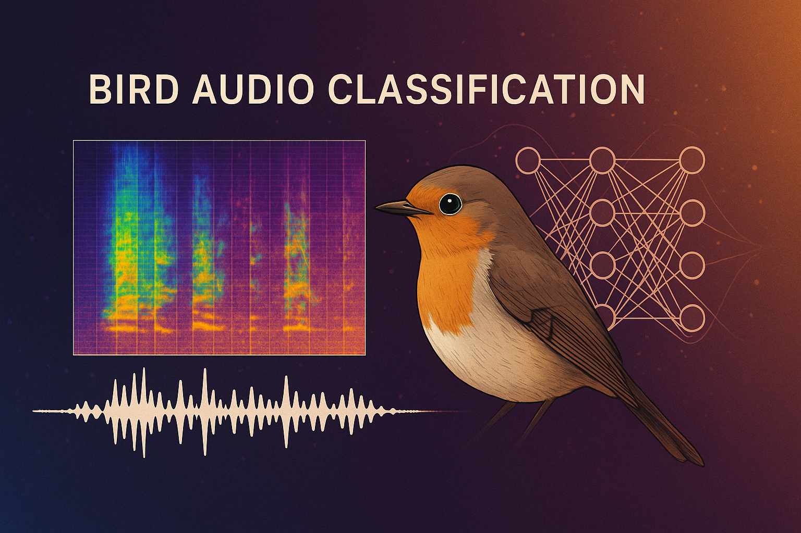
Developed an end-to-end audio classification system for bird species detection as part of the DCASE 2024 Challenge. Utilized PANNs (Pretrained Audio Neural Networks), Residual CNN architectures, and Mel-spectrogram features to build a robust model for environmental sound classification. Implemented data augmentation techniques and fine-tuned models to achieve high accuracy in detecting bird calls from complex acoustic environments.
Python
PyTorch
PANNs
Residual CNN
Mel-Spectrograms
Audio Augmentation
Bird Sound Analysis
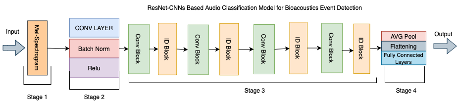
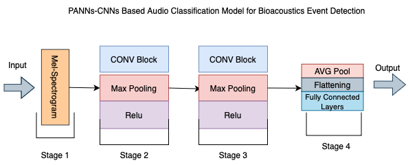
US Elections Outcome Prediction with Machine Learning
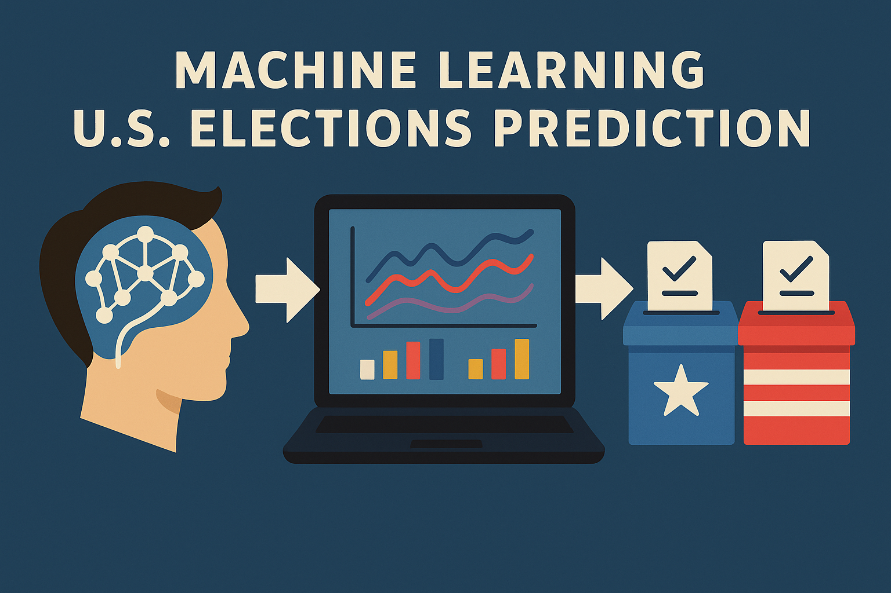
Developed a machine learning pipeline to predict the outcomes of US elections using state-level and demographic data. Implemented data preprocessing, feature engineering, and model training using regression techniques and ensemble methods to analyze voting patterns and trends. This project demonstrates expertise in data analysis, feature selection, and predictive modeling in a real-world political dataset.
Python
Scikit-Learn
PCA
t-SNE
Random Forest
Regression
KNN
Data Visualization
Express Android App for Communication
Designed and developed an Android app to support children with autism and selective mutism in expressing themselves. The app offers two key features: a symbol-based communication interface with intuitive icons (e.g., water, food, emotions) and a free text-to-speech option that allows children to type their own messages for vocalization. This project showcases the integration of accessibility principles, user-friendly design, and impactful technology for social good.
Android Studio
Java
XML
Firebase
Accessibility
Autism Support
Selective Mutism
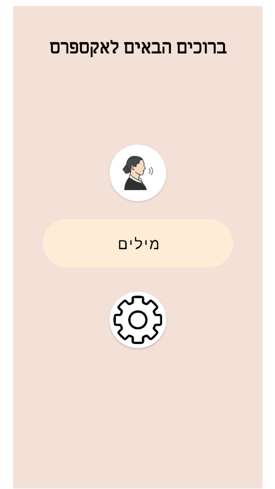
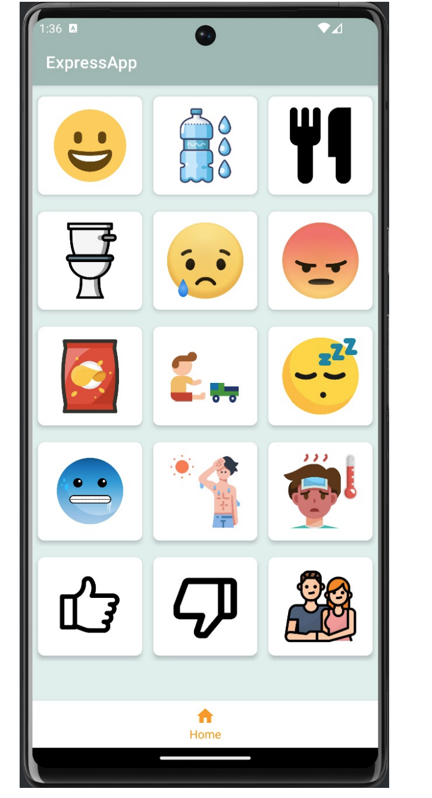
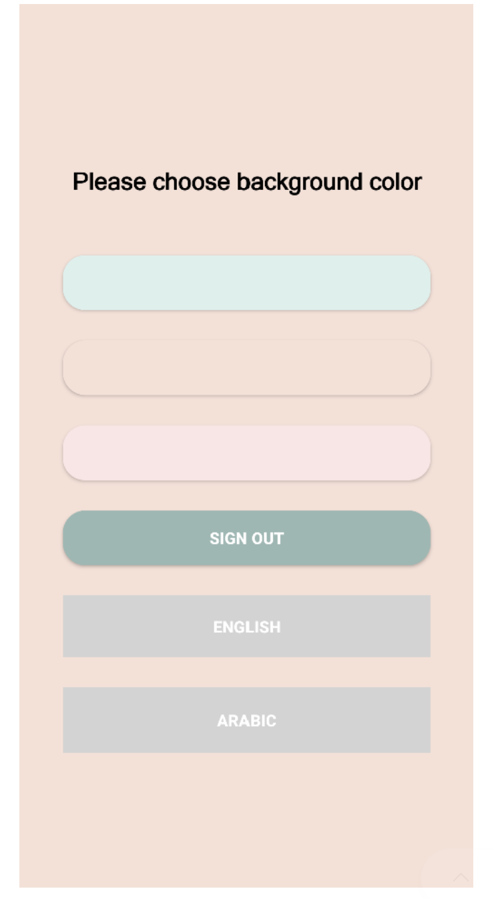
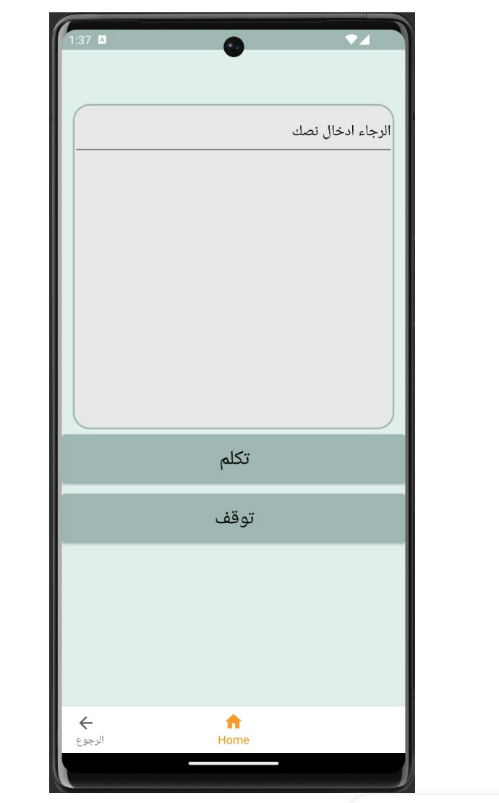
ZooTopia - Java Zoo Information System
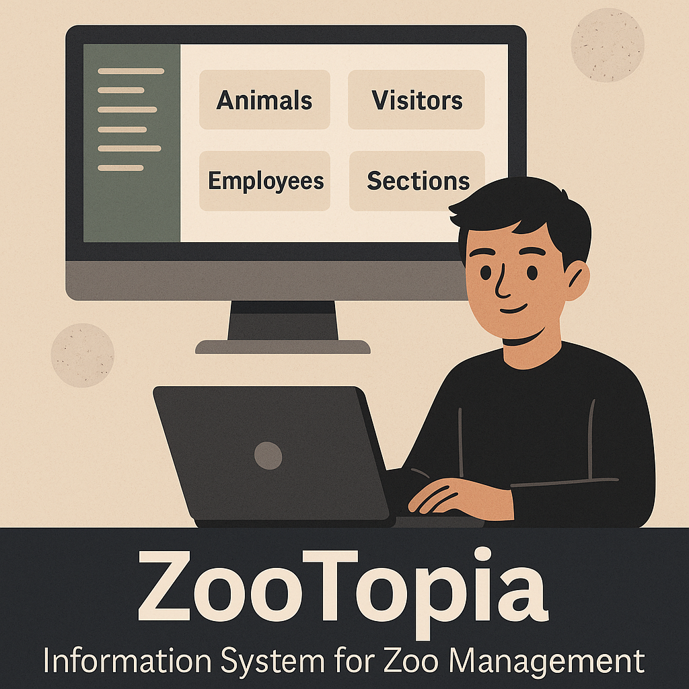
Developed a comprehensive Zoo Information System using Java and JavaFX. The application allows administrators and employees to manage zoo operations including animals, visitors, employees, and sections. Key features include adding and removing animals, managing visitors, applying discounts, and performing queries for detailed reports. The system is designed with a user-friendly GUI and object-oriented programming principles for clean, maintainable code.
Java
JavaFX
OOP
GUI Design
Data Management
ISS Spotter – Real-Time International Space Station Tracker
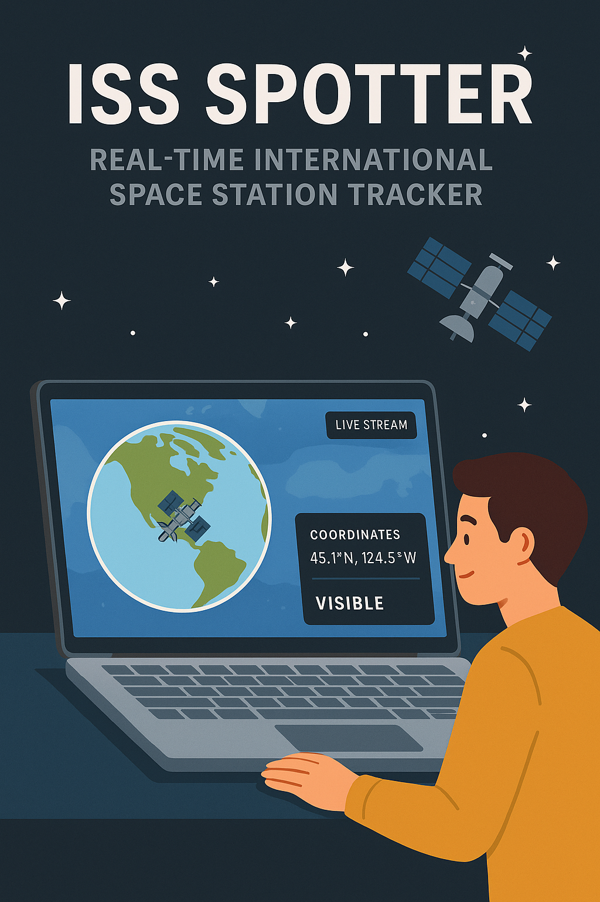
Developed a web application that tracks the International Space Station (ISS) in real-time. The app displays the ISS's current location on a Google Map, provides live streaming from the ISS, and shows updated coordinates and visibility status. Built using React.js, the application fetches data from the "Where The ISS At?" API and integrates Google Maps for visualization.
JavaScript
HTML
CSS
Leaflet.js
API Integration
Real-Time Data
Web Development
Global Methane Emissions Visualization
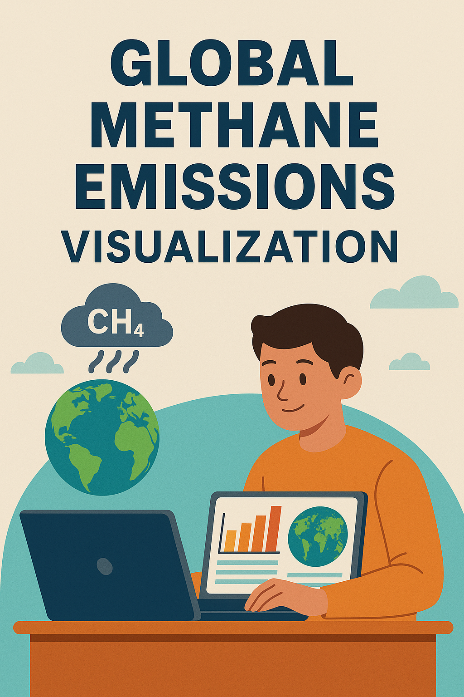
Developed an interactive web-based visualization to depict global methane emissions over time. The application features a 3D globe representation, allowing users to explore methane emission data by rotating and zooming into different regions. Built using D3.js and WebGL, the project provides an intuitive interface for understanding the spatial and temporal distribution of methane emissions worldwide.
JavaScript
D3.js
WebGL
Data Visualization
Interactive Design
Environmental Data
Certifications & Achievements
A collection of my academic degrees, professional certifications, and recognitions that showcase my dedication to learning and excellence in the field of technology.
-
BSc Information Systems (First-Class Honours) – Haifa University
View Certificate
-
MSc Internet of Things (Distinction) – Queen Mary University of London
View Certificate
-
-
-
Developing Websites and Front-Ends with Bootstrap – IBM & Coursera
View Certificate
-